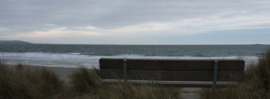

Me
My name is Kevin Stich and I'm a software developer working for Synapse Games. I work primarily in PHP, javascript, and MYSQL developing for the Facebook and Kongregate platforms.

Resumé
Programming became my passion early on when tweaking my favorite PC games to play in a way that I felt was more fun. It has been what I've seen myself doing for the rest of my life, be it in games, sites or apps.

Thoughts
My thoughts on technology, games, politics and more will be posted alongside Martin Diamond's on our tumblr, teccdecc.

Photography
When I'm not in school or working, I enjoy being together with friends and family. I enjoy games of all kinds, photography and music in my few hours of spare time.